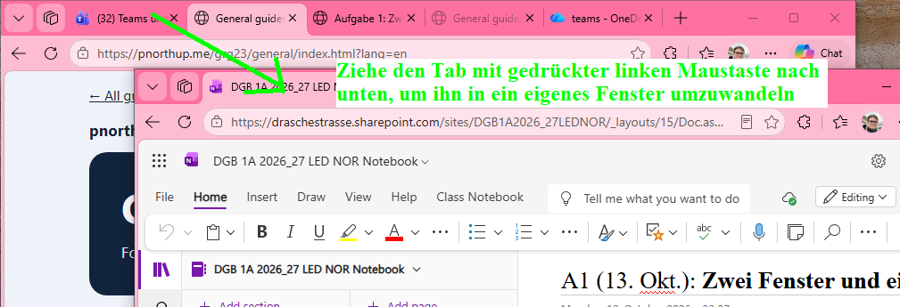

Windows 10 und Windows 11
Bonus 1: Fenster mit der Maus ordnen
Lege zwei Fenster nebeneinander. Benutze dafür die Maus.
1. Zwei Fenster vorbereiten
- Lass die OneNote-Seite in einem eigenen Edge-Fenster offen.
- Öffne unsere allgemeinen Anleitungen.
- Ziehe den Tab der Anleitungen mit gedrückter linker Maustaste nach unten aus der Tab-Leiste. Lass los. Die Anleitungen haben jetzt ein eigenes Fenster.

2. Die Fenster an den Rand ziehen
- Klicke oben am OneNote-Fenster auf eine freie Stelle neben den Tabs. Halte die linke Maustaste gedrückt.
- Ziehe das Fenster bis zum linken Bildschirmrand.
- Warte, bis du eine Vorschau für die linke Hälfte siehst. Lass dann los.
- Wenn Windows kleine Fenster zur Auswahl zeigt: Klicke auf die allgemeinen Anleitungen.
- Sind die Anleitungen noch nicht rechts? Ziehe ihr Fenster genauso bis zum rechten Bildschirmrand.
[SCREENSHOT HERE]
3. Wieder groß und wieder klein
- Klicke zweimal schnell auf eine freie Stelle oben neben den Tabs. Das Fenster wird groß.
- Klicke dort noch einmal zweimal schnell. Das Fenster wird wieder kleiner.
- Ordne die beiden Fenster wieder nebeneinander an.
- Mache mit Windows + Umschalt + S einen Screenshot von beiden Fenstern.
Meine Arbeit in OneNote
Klicke auf den Tab mit deiner OneNote-Seite. Schreibe auf der Bonus-Seite die Überschrift Bonus 1.
Füge dein Bild mit Strg + V ein. Schreibe darunter: Wo musst du ein Fenster festhalten, um es zu verschieben?
Prüfen
- Mein Bild zeigt beide Fenster nebeneinander.
- Ich habe die Fenster mit der Maus angeordnet.
- Ich habe die Frage beantwortet.
Wenn du mit deinen Bonus-Aufgaben fertig bist: Klicke oben in Edge auf den Teams-Tab. Öffne die Bonus-Aufgabe. Klicke oben rechts auf Abgeben. Prüfe: Steht dort Abgegeben?